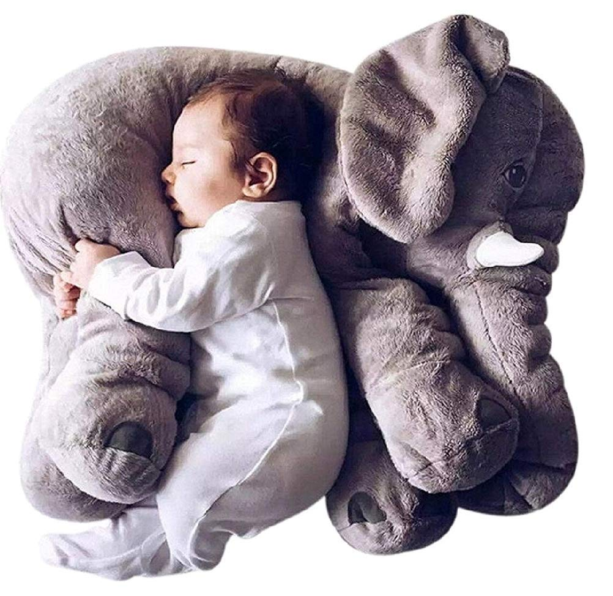
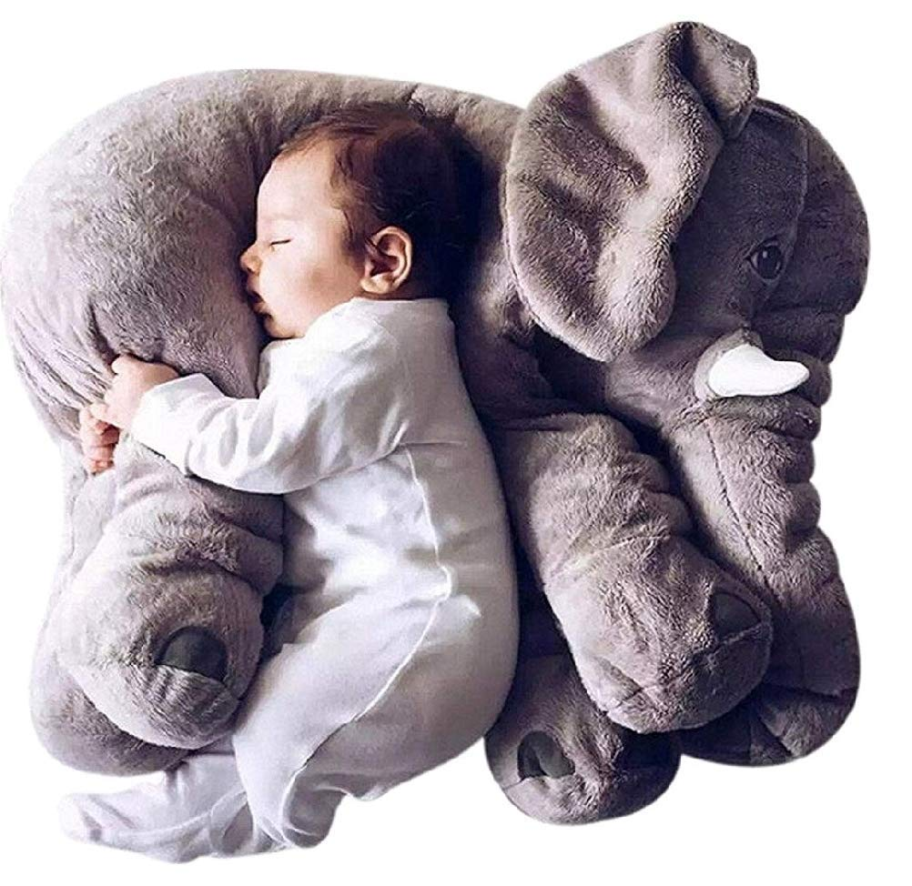

Education is a key part of animal welfare and includes an increased level of staff and volunteer understanding of and proficiency in animal welfare science and best practices. This includes training sessions for all departments in the Zoo and mandatory welfare modules for all who work on site including staff, volunteers, service providers, and contractors to ensure that everyone understands the importance and complexity of animal welfare and their role in ensuring the best welfare for all of our animals. This develops a culture of welfare advocacy.
Animal welfare encompasses many different definitions and subjects. It is the protection of the health and wellbeing of animals but also how an animal is coping with the conditions in which it lives. The Association of Zoos and Aquariums (AZA) defines animal welfare as an animal’s collective physical and mental state over a period of time and is measured on a continuum of good to poor. It is also important to note that there is a difference between animal welfare and animal rights, as animal welfare is measurable whereas animal rights are a personal belief. At the root of all the definitions, an animal experiences good welfare if it is free from pain, stress or discomfort, is well nourished, comfortable, safe, and can perform natural behaviours.
 
